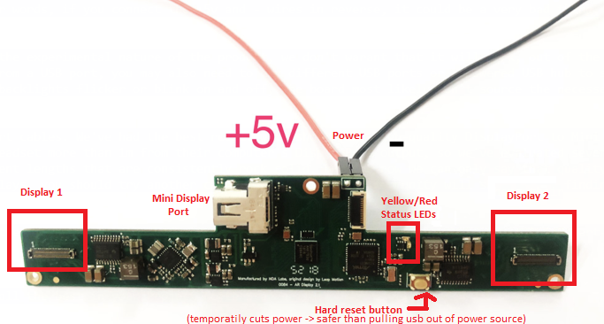

FAQ Smart Prototyping Kits
Note
This page is intended to be specifically about the Smart Prototyping kits, there will be some overlap with general FAQ. Check the sidebar to jump to the correct question.
What are the differences between the kits? Which should I get?
Smart Prototyping offers multiple kits.
- Kit A contains all the electronics and mechanical pieces to get you started with your build, but does NOT come with 3D printed parts. You'll have to print them, and assemble the headset.
- Kit B contains all the electronics and mechanical parts, along with the 3D printed parts. You'll still need to assemble and calibrate the headset.
- Kit C contains the headset fully assembled and pre-calibrated.
You can also choose which set of cables you'd like with your headset on the checkout page, or order extra parts or upgrade kits as the project continues development.
What kind of screws are in the kit? What tools do I need for assembly (what is included in the kit and what is not for putting everything together)?
The smart prototyping kits come with a full screwdriver kit, and all the screws you'll need to build the headset, aside from a soldering iron. A soldering iron is used for heating up the heat-threaded inserts and can be found at any local electronics store for around $10 USD.
What is the difference between the 25cm and 75cm version of the headset?
These numbers refer to the focal distance that the images appear from the user. The only difference between the two is the location of the screens relative to the combiner. The focal distances can be switched by replacing the display tray.
Typically, we recommend starting with a 25cm build since they are easier to get started with.
Kit B ships with both 25cm and 75cm trays so you can choose which method you want when you build your headset. Kit C, the preassembled version requires you to choose which version you want before ordering as these headset are pre-calibrated.
****25cm is sharper for items attached to your hand or right in front of your face.
-
25cm provides a much better experience when using all the virtual wearable interfaces from Leap Motion
-
25cm allows for a slightly wider FOV
-
25cm is also much brighter because of the angle of incidence and collimation layer in the display panel
-
for wandering about and batting stuff around, throwing things, sticking stuff to your wall, or making Characters run around the room 75cm is way more convincing. With 25cm, the Vergence accommodation effect is noticeable, even if you get your IPD just right
-
75 cm is harder to calibrate than 25cm
In general, 75 cm is better if a lot of things you’re dealing with are further away, while 25 cm is best if you’re prototyping hand interactions. You can still tell how far away things are with either of the focal distances via stereo overall.
So to conclude, whichever decision you opt for will work depending on what you plan on doing. However, something to keep in mind is that if you wish to switch between the two display holders, you have to put the screens into the new trays and recalibrate the headset using the stand.
If I already have a calibration JSON file for my headset, can I not simply reuse that in the event that I reprint the display trays / change them from 25 cm to 75 cm or vice versa?
Just switching or reusing past calibration JSONs isn’t enough. Simply knocking a set of combiners in an optics bracket into a different position by a fraction of a mm is enough to invalidate the calibration. The same goes for repositioning, or removing and reinserting the display in the same tray. Displays and combiners cannot move relative to each other without needing recalibration. There’s also a lot of imprecision in FDM printing and hand assembly. The positioning of the headset inserts in the back of the trays is, alone, imprecise enough that most headsets are imperfect by nature for the level of quality that is required for this project if you want the best experience that North Star is capable of producing.
My displays have arrived but the connector ribbon is strongly attached to the back. Do I peel it off before inserting it into the screen holder? What about the small circuit boards attached to it? Do they come off with the ribbon cable or do they stay attached to the ribbon cable?
Currently you have to peel the cable *carefully and patiently* from the back of the display.
A detailed and descriptive video is available here, elaborating on how to carefully handle this item here: https://youtu.be/YsGSf7lwdCs
How do I insert the displays into the display tray and attach the unit to the headset?
Make sure you DO NOT force the screen inside the screen holder under any circumstance. The screen holder has a tray that goes all around which will allow the screen to slide in smoothly. The screen is very sensitive and damage to it is in many cases irreparable and will require a re-order of a new component.
What are the cables connecting to the display driver board?
There are a total of four cables connecting to the board (see picture below):
- two are the two ribbon cables that send data and power to the two displays. The connections are on either side of the board
one for power
one for the mini display port (for transferring data)
Warning
Note that the board will only work with display port connections that support 4k@60hz, hdmi -> displayport adapters will not work. usb-c with displayport functionality or displayport to mini-displayport adapters work fine, as long as they support 4k@60hz.
Warning
NOTE: IT IS VERY IMPORTANT YOU CONNECT THE POWER in the right direction as per the image shown below or irreparable damage might occur to the board.

The expected behavior for the board having adequate power and working properly is having yellow led turned on. The LED's location has also been labeled in the image attached above. If there is also a red led lighting up upon plugging it in, this is reflective of insufficient power being fed into the board. If you have a voltmeter handy you might be interested in checking if after plugging the USB into a computer or a wall socket to usb converter that the voltmeter shows 5V of potential. This is the expected output for a USB connection. If the output voltage is correct or if you see no led light lighting whatsoever then there must be an issue with the device driver board. If this is the case reach out in the #noa-labs-display-adapter channel on the discord server for help in debugging.
Secondly, if you do see the board led lighting up but don’t see anything on the screen you can do a couple of things to get things going:
-
Plugging the power USB in the same computer where you are plugging your display adapter makes things sync up (as this common source shares the same ground)
-
Disconnect everything and connect things in the following order: displays first (make sure you align the pins correctly and don’t force push the cables into the board as that might damage the pins), connect the power cable into your laptop and finally the display adapter. DO NOT under any circumstance unplug the display cables directly from the board while power is being connected. Also, always opt for operating with the cables that connect to the computer
Note
There is a reset button. Using it is actually much safer than plugging cables in and out during testing.